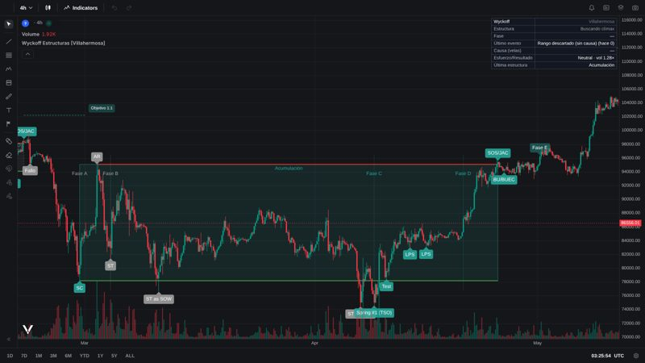
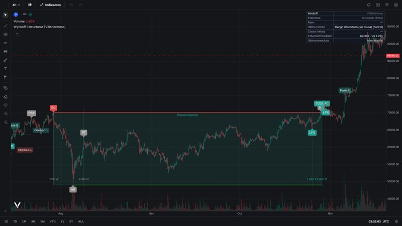
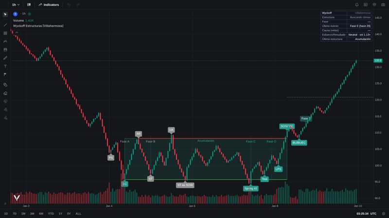
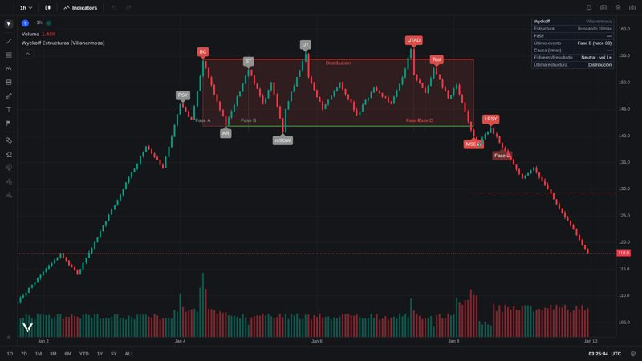

Wyckoff Estructuras
Indicador en Pine Script v6 que detecta acumulaciones, distribuciones, reacumulaciones y redistribuciones con sus fases A–E y eventos (SC, AR, ST, Spring, UTAD, SOS/JAC, LPS…), según La Metodología Wyckoff en profundidad de Rubén Villahermosa. Aquí corre en el navegador con Vela y PineTS de LuxAlgo.
BTC con velas reales

Acumulación
BTC 4h · feb–abr 2025
SC → AR → ST → Spring #1 (TSO) el 7 de abril → Test → LPS → SOS/JAC → BU → Fase E.

Reacumulación
BTC 4h · ago–oct 2024
PSY → BC → AR → ST → LPS → SOS/JAC y salida en noviembre.
Esquemas del libro (velas sintéticas)

Acumulación #1
Con Spring
PS, SC, AR, ST, UA, ST as SOW, Spring #2, Test, LPS, SOS/JAC, BU/BUEC, Fase E.

Distribución #1
Con UTAD
PSY, BC, AR, ST, mSOW, UT, UTAD, Test, MSOW, LPSY, Fase E.